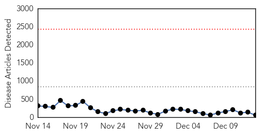
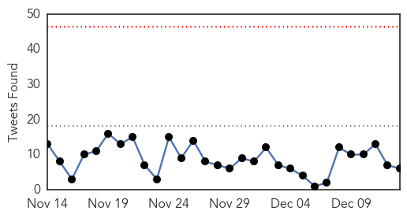
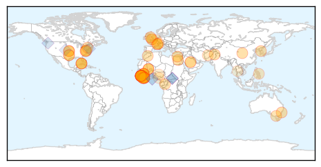
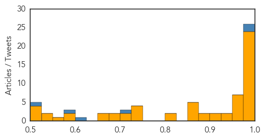

Toggle navigation
Early Warning
Daily Alerts
Ebola
Dec 13, 2014
Compare to:
-
Dengue Fever
Hemmorhagic Fever
Mold/Fungal Infection
Influenza
Meningitis
Pertussis / Whooping Cough
Middle East Respiratory Syndrome
Cholera
Hepatitis
Chikungunya
Yellow Fever
Bubonic Plague
West Nile Virus
Swine Flu
Measles
Unknown
Mumps
30 Day Trends
Web: 0
alerts
, 0
warnings
Twitter: 0
alerts
, 0
warnings
Top Articles:
Showing top 50 articles...
0.999
Mali says last known Ebola case has recovered
0.999
Last Ebola patient has recovered, been released; 26 people being monitored for symptoms
0.999
45-day Ebola 'health emergency' declared in 5 Guinea regions
0.998
Health official talks flu, ebola
0.997
UN meeting urges critical improvements to health systems of Ebola-affected countries
0.997
Hospital mistakes blamed for US transmission
0.997
Australian Ebola hospital opens but returning senator calls for greater contribution
0.997
Australian Ebola hospital opens but returning senator calls for greater contribution
0.997
Ebola-Stricken Sierra Leone Cancels Christmas
0.996
Australian Ebola hospital opens but returning senator calls for greater contribution
0.996
Amid Ebola crisis, Sierra Leone ‘cancels Christmas‘ « Hot Air
0.995
EU ships emergency Ebola supplies to West Africa
0.994
Sierra Leone Bans Christmas Parties..., SahilOnline News
0.994
Medical shortages hinder Ebola relief, survivors grieve
0.991
They survived Ebola only to become social outcasts
0.990
Sierra Leone Bans Public Christmas Celebrations
0.989
Sierra Leone to ban Christmas parties over Ebola
0.988
WHO: Delay of Ebola Drug Trial 'Not a Setback'
0.983
“We must stay focused and sustain our efforts to stop Ebola as soon as possible” says IFRC Secretary General in Brussels - Sierra Leone
0.983
The Durango Herald 12/12/2014
0.980
Malaria is still the king of diseases - Restating the Obvious by Harry Eagar - Mauinews.com
0.980
Crabmeat imports flood into Baltimore's port
0.980
Plane Lands Safely After Hitting Bird
0.978
Sierra Leone Cancels Christmas Because of Ebola
0.972
Sudan Vision Daily
0.972
S. Korea's first batch of Ebola team leaves Seoul
0.971
Sierra Leone bans Christmas celebrations
0.968
Ebola response must include efforts to bolster health systems – UN Economic, Social Council chief
0.963
Sierra Leone bans Christmas celebrations
0.956
This Year, There Will Be No Christmas in Sierra Leone
0.955
ANZAC-style Ebola treatment centre opens
0.947
Liberia court rejects petition to halt Senate vote over Ebola
0.940
Ebola fears ring loud at ECOWAS meetings (By Segun Adeyemi, PANA Correspondent, Nigeria)
0.917
Who is Martin Salia, the Sierra Leone Surgeon and Second US Resident who Died of Ebola?
0.916
Kiwis working in the face of death against Ebola
0.894
Nurse looks back on Ebola, Liberia
0.885
The Fight Against Ebola: Donating the Cure
0.874
UK welcomes international contributions to support efforts to end Ebola in Sierra Leone
0.873
Ebola ruled out after passenger gets sick on flight to Richmond
0.872
Medical donation to aid Ebola fight (From This Is Wiltshire)
0.867
Around the web: Time Magazine reveals Person of the Year cover
0.860
Melbourne doctor on the Ebola frontline
0.818
Sierra Leone Ebola Situation Report, 10 December 2014 - Sierra Leone
0.801
Sentinels of health: Inside the CDC
0.740
'Ebola entered my life and everything changed': Brave Welsh doctor Nathalie MacDermott's diary of life on the front line of the fight against Ebola
0.736
US embargo stalled payment to Cuban Ebola doctors
0.736
US embargo stalled payment to Cuban Ebola doctors
0.726
Maryland reservists gear up for Ebola mission
0.715
Knoxville Ebola vaccine testing on hold until January
0.700
Meet Some Of The Most Under-Appreciated Doctors In Fight Against Ebola
Top Tweets:
0.985
RT: Now Playing Collectif Africa Stop Ebola - Africa Stop Ebola collectifafricastopebola
0.982
Ebola Update: 18,118 confirmed, probable, and suspected cases of Ebola in 3 most affected countries. 6,533 reported deaths. EbolaResponse
0.899
Fantastic story out of the Ebola fight. Woman who saved relatives from Ebola to go to U.S. nursing school http://t.co/7E8sw7oE44
0.811
RT: Sierra Leone MOH Ebola Update Dec 13: 35 New Conf. Cases & 14 Susp.; 42 New Conf. Deaths http://t.co/nJj6ZOcxOU
0.732
RT: Des artistes français soutiennent MSF et l'initiative AfricaStopEbola pour lutter contre le virus Ebola https://t.co/LUW…
0.667
Sierra Leone district faces Ebola lockdown http://t.co/C9AO6hVoCf via @@ajenglish
0.630
Ebola : Los héroes se quitan la máscara http://t.co/CEEbDfbiKn @finanzascom
0.621
RT: Over 1500 entries in GrandChallenge to fight Ebola bring ideas 4 ice cold suits & lotions to repel the virus http://t…
0.596
Sierra Leone cancels Christmas over Ebola | via http://t.co/QdQgaFmus6 via Africa Spare a thought and show ur support
0.576
RT: «Télécharger ce single, c’est participer à la lutte contre Ebola» @tikenjahmusic du collectif MSF https:…
0.555
RT: Ebola Ebola diary: delivering food and supplies to quarantined homes http://t.co/q2I7RlkD1o http://t.co/MO4QTRbPzO
Web/News Articles

Tweets

Article Locations

Article Confidences
